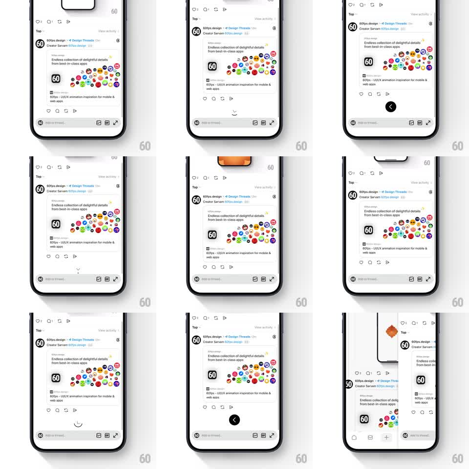

Media
Frame-by-frame

Rebuild this interaction 1:1: Threads' pull-to-go-back at the end of a thread - scrolling past the last post reveals a circular arrow indicator that rotates as you pull, and releasing past the threshold pops back.

Rebuild this interaction 1:1: Threads' pull-to-go-back at the end of a thread - scrolling past the last post reveals a circular arrow indicator that rotates as you pull, and releasing past the threshold pops back. ## Integration Integration: stack-agnostic spec - springs given as stiffness/damping, timed motions as duration + curve; map every value to your framework and animation library of choice. ## Scene Threads post detail, white: the full thread (author row, post text, link card, action row) with the reply composer pinned above the keyboard. At the very bottom of the scroll: a circular back-arrow indicator that only appears in the overscroll zone. ## Motion spec Pattern: overscroll pull-to-back with a rotating arrow gauge. - At the scroll end, continued pulling drags the content down with rubber-band resistance (0.4x damping) and reveals the circular indicator rising from the bottom edge (position tied to pull distance). - The arrow inside the circle rotates with pull progress: 0 -> 180 degrees mapped to 0 -> 100% of threshold, so the chevron winds up as you pull. - The circle's fill/track darkens with the same progress; at 100% the arrow completes its turn and the circle pulses once (scale 1 -> 1.1 -> 1, 200ms) - armed. - Release armed: the view pops off the stack (content slides right, 250ms, ease-in) and the indicator finishes its rotation as it exits. - Release below threshold: content springs back (spring ~300/18) and the indicator sinks back off-screen, unwinding its rotation. ## Calibration - The indicator is centered horizontally and modest (~44px) - a gauge, not a banner. - Rotation and travel are both scrubbed 1:1 by pull distance - no autonomous motion until release. ## Reduced motion Indicator fades in (200ms); back navigation happens at threshold without rotation. ## Don't miss - The indicator is only reachable by overscroll at the thread's end - it never appears mid-scroll. - The arrow's rotation direction reads as "winding back" - clockwise as you pull.